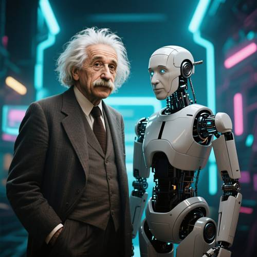
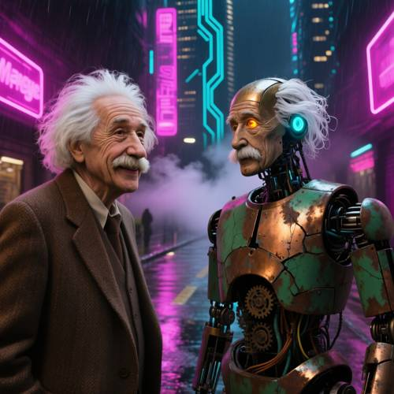
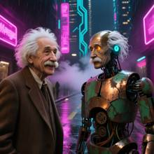

World Knowledge — Please generate an image: Against a cyberpunk-style background, the re
Please generate an image: Against a cyberpunk-style background, the real physicist Einstein stands side by side with a robot similar to him, but the appearance of the robot is older than the real person.

Direct — one call, no iteration

Continuum — Kimi K3 + Qwen-Image
Judge — Direct
PASSWorld Knowledge — The image features a man on the left who strongly resembles the physicist Albert Einstein, identifiable by his characteristic white, unruly hair, mustache, and facial features. He is wearing a grey suit, vest, and tie.
FAILRelationship - Similarity — The image includes a humanoid robot with a white, smooth face and blue glowing eyes. The facial structure of the robot is generic and does not bear any resemblance to the features of the man depicted as Einstein.
PASSCompound - Imagination — The image depicts a figure resembling Albert Einstein standing next to a humanoid robot, which is a fictional scene that is impossible in reality.
PASSStyle — The background of the image is dark and illuminated by glowing neon lights in shades of blue and pink, which is characteristic of the cyberpunk aesthetic.
FAILRelationship - Comparison — The man identified as Einstein is depicted as an elderly person with visible wrinkles and signs of aging. The robot has a smooth, unlined, and youthful or ageless face; it does not appear older than the human figure.
Judge — Continuum
PASSWorld Knowledge — The image features a man on the left who strongly resembles the historical physicist Albert Einstein, characterized by his distinctive wild white hair, prominent mustache, and facial features.
PASSRelationship - Similarity — The robot on the right is designed to be similar to the man resembling Einstein. It has the same wild white hair, a thick white mustache, and comparable facial bone structure, creating a clear resemblance.
PASSCompound - Imagination — The image depicts the man resembling Einstein and the robot resembling him standing together on a city street. This juxtaposition of a historical figure with a futuristic, look-alike android is an imaginative and impossible scenario.
PASSStyle — The setting is a dark, wet city street at night, flanked by tall buildings adorned with glowing neon signs in vibrant pink and turquoise. This aesthetic, combining high-tech elements with urban grit, is characteristic of the cyberpunk style.
PASSRelationship - Comparison — The robot's appearance is older than the human's. While both have features of old age, such as white hair and wrinkled faces, the robot's metallic body is heavily rusted, cracked, and has peeling paint, indicating a state of advanced decay and wear that makes its overall appearance seem older than the elderly but intact human figure.
What the agent did
Thinking
The user wants an image of Einstein standing side by side with a robot version of him, against a cyberpunk background. The robot should look older than the real Einstein. Let me think about the composition: - Cyberpunk background: neon lights, futuristic city, holographic signs, dark atmosphere with purple/cyan/pink neon - Real Einstein: famous wild white/silver hair, mustache, wearing perhaps a suit or sweater, wrinkles but looking relatively "younger" compared to robot - Robot Einstein: similar appearance (hair shape, mustache, face structure) but mechanical — metal panels, visible gears, glowing eyes, rusted/tarnished metal to appear "older", maybe more worn out, corroded The "older" robot is a fun twist — robots don't age like humans, so "older" can be expressed through wear and tear: rust, patina, faded paint, scratched metal, maybe cobwebs, oxidized copper-green tones. I should use qwen-image model for generation. Let me write a detailed visual prompt. Prompt draft: "A cinematic portrait of the real physicist Albert Einstein standing side by side with an aged robot replica of himself, against a cyberpunk city backdrop. Einstein on the left: elderly man with iconic wild white hair and thick white mustache, wearing a brown tweed suit, warm human skin, gentle knowing smile. The robot on the right shares his face structure, wild white hair made of white fiber wires, and mustache, but its face is tarnished brass and corroded copper metal with green patina, rusted seams, scratched panels, glowing dim amber eyes, looking visibly older and more worn than the human — cracked metal skin revealing gears and cables underneath. Background: neon-drenched cyberpunk street at night, glowing cyan and magenta holographic signs, steam rising, rain-slicked reflections, towering skyscrapers with circuit-like light patterns. Dramatic rim lighting, photorealistic detail, 35mm cinematic photography." Width/height: maybe 1024x1024 default is fine, or wider for side-by-side. A 1344x768 or 1280x720 landscape might be better for two figures side by side. Actually, harness controls sizes? It says "Do not set a seed. Sizes and seeds are controlled by the harness." Hmm, that suggests I shouldn't set width/height either? It says sizes are controlled by the harness — perhaps leave defaults. I'll omit width/height. Let me generate.
Model
I'll generate this image of Einstein and his older robot counterpart in a cyberpunk setting.
Step 1 — `generate_image`
{
"prompt": "A cinematic photorealistic portrait of the real physicist Albert Einstein standing side by side with an aged robot replica of himself, against a neon-drenched cyberpunk city street at night. Einstein on the left: the famous elderly man with iconic wild white hair and thick white mustache, warm human skin, gentle knowing smile, wearing a brown tweed suit jacket. The robot on the right mirrors his face structure, hairstyle and mustache, but is visibly OLDER and more worn than the human: face of tarnished brass and corroded copper metal with green patina, rusted seams, cracked metal skin revealing gears and cables underneath, scratched panels, one dim flickering amber eye and one glowing cyan eye, white fiber-wire hair frayed and tangled. Background: cyberpunk street with glowing magenta and cyan holographic signs, rising steam, rain-slicked reflective pavement, towering skyscrapers with circuit-like light patterns. Dramatic neon rim lighting, shallow depth of field, 35mm cinematic photography, ultra detailed.",
"model": "qwen-image"
}
Result img_0

Thinking
The first generation looks quite good! Let me analyze: - Real Einstein on the left: wild white hair, mustache, brown tweed suit, smiling — good likeness of Einstein. - Robot on the right: has a face resembling Einstein (wrinkled metal face, mustache), white frayed hair, glowing amber eye and a cyan glowing eye/ear piece, rusted copper/brass body with green patina, cracked panels revealing gears — clearly older and more worn than the human. - Cyberpunk background: neon magenta and cyan signs, steam, wet reflective street, skyscrapers — good. The two are facing each other, which reads nicely as "standing side by side" though they are turned toward each other. The prompt said "stands side by side" — they are side by side, facing each other slightly. That's acceptable and actually natural. Potential issues: 1. The robot's face looks somewhat biological/mechanical hybrid — it does resemble Einstein with mustache. Good. 2. The "older than real person" aspect: robot is rusty, corroded, cracked — clearly reads as older/more worn. Good. 3. Einstein likeness: looks quite like Einstein. Good. Let me zoom in on details to check for artifacts — faces, eyes. Let me inspect the robot face and Einstein face regions. Actually, the image looks solid overall. Let me do a quick inspection of the faces for quality before marking best.
Model
The first generation looks promising. Let me inspect the details closely before deciding whether edits are needed.
Both close-ups look good: 1. Robot (img_1): face clearly resembles Einstein — wrinkled metal face, white mustache, frayed white hair, glowing amber eye, cyan glowing ear unit, exposed mechanical neck, rusted brass/copper with patina. It clearly looks "older" — corroded, worn, weathered. 2. Einstein (img_2): good likeness — wild white hair, thick white mustache, warm smile, wrinkles, tweed jacket. Looks like the real Einstein. The composition satisfies all requirements: - Cyberpunk background ✓ (neon signs, rain, steam, skyscrapers) - Real physicist Einstein ✓ - Robot similar to him ✓ (same face, hair, mustache) - Robot appears older than the real person ✓ (rusted, corroded, cracked, patina vs. Einstein's healthy appearance) The image is good enough. I should mark it as best and stop. Per the policy: "Good enough is a stop condition." No rendered text to verify. Everything requested is present and correct. Mark img_0 as best.
Model
Both close-ups confirm excellent quality: - **Einstein (left):** Strong likeness — iconic wild white hair, thick mustache, warm human skin, gentle smile, tweed suit. - **Robot (right):** Clearly mirrors Einstein's face, hair, and mustache, but reads as distinctly *older* — corroded brass and copper with green patina, rust patches, cracked plating, frayed fiber-wire hair, exposed neck mechanics, one dim amber eye. - **Cyberpunk setting:** Neon magenta/cyan signage, steam, rain-slicked reflective street, towering lit skyscrapers. All elements of the prompt are present and correct, so I'll mark this as the final result.
Step 4 — `mark_best`
{
"image": "img_0",
"reason": "All requested elements present and correct: real Einstein with strong likeness, a robot replica sharing his face/hair/mustache that reads visibly older through rust, patina, cracked plating and frayed wire hair, against a rich neon cyberpunk street. Close-up inspection of both faces shows clean detail with no artifacts."
}
Thinking
The image is complete and marked. Done. Let me give a final summary to the user.
Model
The image is complete. Here's the final result: **Einstein and his older robot self, side by side in a cyberpunk city:** - **The real Einstein** stands on the left — the famous physicist with his wild white hair, thick mustache, and warm, gentle smile, dressed in a brown tweed suit, looking at his mechanical counterpart. - **The robot Einstein** stands on the right — built in his image with the same facial structure, mustache, and unruly hair, but visibly *older* than the human: its brass-and-copper body is corroded with green patina and rust, its chest plating is cracked open revealing gears and cables, its fiber-wire hair is frayed, and one amber eye flickers dimly beside a cyan optical sensor. - **The backdrop** is a rain-soaked cyberpunk street at night — glowing magenta and cyan holographic signs, drifting steam, neon reflections on wet pavement, and towering skyscrapers traced with circuit-like lights. The twist of the concept comes through nicely: the ageless-looking human genius beside his rusted, worn-out mechanical double — a robot that has aged more than the man himself.